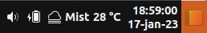

"The year of the Linux Desktop" shouldn't be a joke anymore. Most Linux distros want to reinvent a wheel that just worked fantastically, and there's a reason why WindOS🪟️'s core design is loved: imagine you're watching something hmmmm and a colleague/relative (or your f'in Boss! who can also be your mom herself) approaches your area: aren't the bottom-right ShowDesktop sooo handy? ( ͡° ͜ʖ ͡°)
Included comfort
-
The bottom-right taskbar you love, now even with weather!
-
Be able to run most of your "WindOS"🪟️ .exe apps!
-
And more!